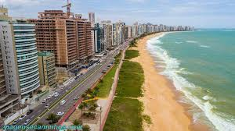

Vila Velha é um município brasileiro localizado no litoral do estado do Espírito Santo, na Região Sudeste do país. Pertence à Região Metropolitana de Vitória e ocupa uma área de 209,965 km², sendo que 54,57 km² estão em perímetro urbano, e a população em 2024 foi estimada pelo IBGE em 502 899 habitantes, o que faz do município o segundo mais populoso do Espírito Santo, atrás apenas da Serra.
